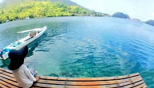
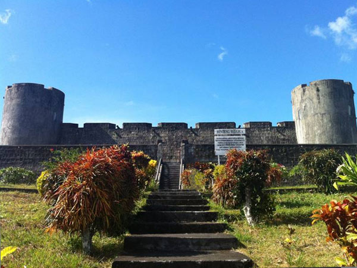
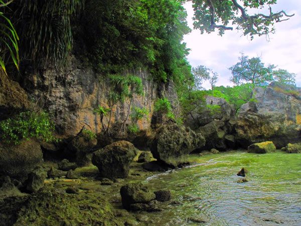

Rumah Wisata Bintang Laut memberikan layanan inap dan paket wisata full trip padat aksi sejak Anda check-in.
Dengan servis yang bersahabat, akses cepat ke beragam spot wisata sejarah, wisata budaya, wisata alam bawah laut dan biaya yang terjangkau.
Rumah Wisata Bintang Laut memastikan Anda membawa pulang kenangan tak terlupakan selama di Banda Naira.
Kami tak mungkin mengajak Anda bermalam dan berpetualang tanpa pelayanan prima yang kami Andalkan.
Nah, apa saja yang beda dari pelayanan kami?
Layanan Full Trip
Kami mengatur petualangan Anda secara full. Anda telah ditangani seara tepat sejak kedatangan, checkin, aktivitas in-house, petualangan ke spot-spot wisata hingga Anda check-out dan kembali pulang.
Kompetensi
Rumah Wisata Bintang Laut, Banda Naira, dikelola oleh tim yang kompeten di bidang kepariwisataan dan berpengalaman di dunia petualangan Banda Naira.
Kami pastikan Anda mendapatkan sudut pandang baru pada setiap foto yang Anda ambil, pantai yang Anda renangi dan laut yang Anda selami.
Tim kami ahli dalam mendaki Gunung Api Banda, terampil menyelam dan snorkeling serta teliti terhadap faktor keamanan dan keselamatan.
Bersama kami, Anda sudah memilih yang tepat!
Akses Luas
Kami bekerjasama dengan berbagai layanan lokal untuk meningkatkan kenyamanan Anda ketika bersama kami.
Kami menggunakan boat yang besar, cepat dan aman untuk angkutan perjalanan Anda. Kami menyediakan kuliner terbaik untuk santap malam Anda. Juga lokasi kami bagus untuk memanjakan mata Anda - di tepi pelabuhan kota Naira, Anda dapat menikmati lalu-lintas dalam Teluk Banda dan aktivitas penduduk lokal dalam berinteraksi.
Itu Sajakah?
Tentu tidak. Masih ada yang membuat kami beda...
Bersih dan Nyaman
Kami mengutamakan kebersihan demi kenyamanan Anda. Halaman kami sejuk dan terbuka untuk Anda bersantai.
Dekat Pusat Belanja
Mau menyiapkan oleh-oleh sangat mudah. Bintang Laut berada sangat dekat dengan pusat perbelanjaan Banda Naira.
Dekat Pelabuhan
Kami dekat dengan pelabuhan kapal PELNI. Anda dapat lebih santai saat tiba di Banda dan berangkat pulang.
Jadi bagaimanakah jadwal Full-Trip yang ditawarkan?
Daftar Harga
Harga Paket Full Trip
Kami fleksibel dalam urusan harga dan biaya.
Silahkan sesuaikan waktu dan budget Anda dengan paket yang kami sediakan.
Harga dalam Rupiah (IDR).
Waktu dan biaya yang Anda keluarkan sangat berharga, dan kami memahaminya.
Karenanya kami mengatur jadwal padat aktivitas, sehingga tak ada yang tersisa untuk disayangkan.
1
Breakfast
2
Briefing
3
City Tour
4
Lunch
5
Beach Trip
6
Evening Trip
Trip Itinerary
Rincian akivitas paket Full Trip yang kami sediakan
Sarapan pagi dan kopi, sekaligus briefing tentang trip yang akan dilakukan.
08.30 - 12.00 WIT (GMT+8)
City Tour
Mengunjungi situs sejarah di Kota Naira, antaralain:
— Gereja Tua
— Museum Rumah Budaya
— Rumah Sutan Syahrir
— Kelenteng Cina
— Benteng Nassau
— Monumen Parigi Rante
— Rumah Drs.Tjiptomangoenkoesoemo
— Istana Mini (VOC Governoors Palace).
12.00 - 14.00 WIT (GMT+8)
Lunch
Lunch dilakukan di Kota Naira dengan buffet menu khas Banda Naira.
14.00 - 15.30 WIT (GMT+8)
Beach Trip — Lava Flow
Snorkeling di gugusan terumbu karang yang tumbuh tercepat di dunia karena pupuk vulkanik, berada di bawah aliran lava saat letusan Gunung Api Banda 9 Mei 1988.
15.30 - 16.00 WIT (GMT+8)
Beach Trip — Pintu Kota
Snorkeling trip di Benteng Pintu Kota, sebuah benteng tua bersejarah di Dusun Kalombo, Pulau Gunung Api. Benteng ini adalah gerbang pemantau lalulintas dalam teluk Banda pada masa kolonial.
16.00 - 16.30 WIT (GMT+8)
Coffee Break
Rehat sejenak dengan kopi rempah racikan khas Banda Naira.
16.30 - 17.30 WIT (GMT+8)
Beach Trip — Pulau Karaka
Sebuah pulau kecil tak berpenghuni yang menjadi ikon selamat datang bagi Banda Naira.
Nikmati terumbu karang subur dan keragaman hayati di sini. "Surga Bawah Laut Banda yang macet karena terlalu banyak ikan (Marischka Prudence)."

17.30 WIT (GMT+8)
Kembali Ke Kota Naira
Istirahat sejenak dan bersiap untuk menyambut sunset.
18.00 - 20.00 WIT (GMT+8)
Sunset Point Di Benteng Belgica
Nikmati turunnya malam berselimut sinar temaram, mengantar mentari pergi bermimpi, dari puncak tertinggi benteng Belgica, benteng dengan arsitektur terindah se-Indonesia.
20.00 - 21.00 WIT (GMT+8)
Dinner
Makan malam di Rumah Wisata Bintang Laut dengan menu khas Banda Naira.
21.00 WIT (GMT+8)
Agenda Bebas
Kami mengembalikan malam kepada Anda, Anda bebas beraktivitas dan kami siap menemani.
Hari kedua, saatnya Anda kami ajak menuju Pulau Banda Besar, penghasil buah pala paling berkualitas seantero dunia. Anda akan kami bawa melihat saksi sejarah, rempah-rempah yang mengundang bangsa Arab, Cina dan Eropah datang hingga pulau-pulau di tengah laut terluas Indonesia ini.
Sarapan pagi dan kopi, sekaligus briefing tentang trip yang akan dilakukan.
08.30 - 11.00 WIT (GMT+8)
Desa Adat Lonthoir
Desa ini adalah salah satu pusat peradaban Eropa di Banda, dengan view menarik di atas tebing Benteng Hollandia
— Parigi Pusaka
— Perkebunan pala (Kelle Liang)
— Rumah Adat Lonthoir
— Benteng Hollandia (good view here)
11.30 - 16.00 WIT (GMT+8)
Trip Pulau Syahrir
Pulau Pisang adalah pulau karang yang juga dinamai Pulau Sjahrir untuk mengenang sejarah pengasingan
Soetan Sjahrir — Makan siang (lunch) di Pulau Syahrir
— Menuju Tanjung Serang
— Snorkeling di Pulau Syahrir
17.30 WIT (GMT+8)
Kembali Ke Kota Naira
Bersiap untuk snorkeling di Kolang Rotang
18.30 WIT (GMT+8)
Snorkeling Kolang Rotang
Snorkeling sore hari di pantai Kolang Rotang
20.00 (GMT+8)
Dinner
Makan malam di Rumah Wisata Bintang Laut dengan menu khas Banda Naira.
21.00 WIT (GMT+8)
Agenda Bebas
Kami mengembalikan malam kepada Anda, Anda bebas beraktivitas dan kami siap menemani.
Snorkeling trip di Pulau Hata yang berada di ujung timur Kepulauan Banda. Pulau ini memiliki terumbu karang sangat eksotik dan garis pantai yang panjang.
Anda juga akan mengunjungi skaru, sebuah pulau yang tenggelam dan menjadi fishing spot kaya spesies.
Marischka Prudence, duta Sony Indonesia, telah menuliskannya dalam catatan backpackingnya:
Why Hatta Island is A Must Visit?
Di hari keempat Anda akan mengunjungi Pulau Ay dan Pulau Nailaka.
Pulau Ay adalah satu dari dua pulau di Banda Naira yang ikut menentukan sejarah kolonialisme Inggris dan Belanda di Indonesia.
Nailaka adalah pulau tak berpenghuni dengan pasir putih dan air bening.
Sarapan pagi dan kopi, sekaligus mempersiapkan trip ke Pulau Ay dan Nailaka
08.00 - 12.00 WIT (GMT+8)
Menuju Pulau Ay
Berangkat ke Pulau Ay, sebuah pulau bersejarah yang pernah menjadi rebutan antara Belanda dan Inggris
— Snorkeling di Pulau Ay
— Mengunjungi situs sejarah Pulau Ay
— Mengunjungi Benteng Revenge
12.00 WIT (GMT+8)
Lunch
Makan siang di Pulau Ay
13.00 - 16.30 WIT (GMT+8)
Snorkeling Nailaka
— Menuju Pulau Nailaka
— Snorkeling di Pulau Nailaka
— Coffee break di Pulau Nailaka
16.30 WIT (GMT+8)
Kembali ke kota Naira
Kembali ke kota Naira. Anda harus mempersiapkan kepulangan Anda esok pagi.
20.00 WIT (GMT+8)
Dinner
Makan malam di Rumah Wisata Bintang Laut
21.00 WIT (GMT+8)
Agenda Bebas
Kami mengembalikan malam kepada Anda, Anda bebas beraktivitas dan kami siap menemani.
Saatnya Anda bersiap-siap untuk perjalanan pulang.
Terimakasih atas kunjungan Anda ke Banda Naira dan telah mempercayakan Rumah Wisata Bintang Laut sebagai mitra liburan Anda.
Semoga segera bertemu kembali!
Sejarah singkat Bintang Laut.
Berdiri tahun 2001 dengan jumlah kamar 6 ruangan oleh Bapak Yusri A. Ang. Direnovasi tahun 2012 dengan jumlah kamar 12 ruangan.
Ulasan Singkat
Penginapan ini terletak di tepi pantai yang menghadap langsung dengan Gunung Api,
sehingga menambah daya tarik wisatawan yang akan menginap di tempat ini.
Bagian depan rumah dirancang untuk wisatawan yang ingin berenang ataupun memancing di laut.
Keindahan laut yang fantastis terkelilingi pulau Neira dan Gunung Api semakin membuat
wisatawan merasa nyaman ketika menikmati matahari pagi ataupun saat senja.
Penginapan Bintang Laut terdiri dari 1 Mushallah, Dapur, Ruangan Makan, Ruangan Santai,
Ruangan Tamu, dan 12 buah kamar, tiap kamar di lengkapi dengan Spring Bed Double,
Shower dan WC, LCD flat TV 24 channel, Kipas Angin atau Air Conditioner.
Rumah Wisata Bintang Laut menyediakan dan mengatur jasa Laundry, Sarapan Pagi dan Sore, Sewa Perahu Motor Tempel,
Peralatan Memancing, Snorkling dan berbagai fasilitas lain yang anda inginkan.
Penginapan ini berada di kawasan kota Neira, sehingga dekat dengan Pelabuhan,
Bandar Udara, Pasar dan Pertokoan.
Jika anda ingin berkunjung atau berwisata ke Pulau Banda dan menginginkan
Penginapan dengan Fasilitas yang memuaskan, anda dapat menghubungi
kami di no. telp ( +62 910 ) 21183 / 21049 untuk memesan kamar atau
dapat langsung menuju ke Rumah Wisata Bintang Laut Banda Naira, Desa Nusantara Kec. Banda, Maluku.
Lihat Videonya
Letak dan Posisi
Bintang Laut berada di tengah pusat perekonomian Banda Naira, di tepi teluk Pelabuhan Banda, tepat berhadapan dengan Gunung Api Banda. Letak Bintang Laut di sini memudahkan akses via darat ke pusat perbelanjaan, pelabuhan dan situs-situs sejarah serta budaya di kota Naira. Akses laut pun sangat mudah dari sini, terutama untuk menyeberang dan mengunjungi pulau-pulau lain yang hanya dapat diakses lewat transportasi laut.
Anda dapat menghabiskan waktu bersantai dengan menikmati pemandangan dan berinteraksi dengan penduduk lokal yang sibuk dari pagi hingga siang hari. Teluk yang teduh tak mungkin Anda lewatkan tanpa berleha sejenak menikmati minuman kelapa muda dingin.
Banda Naira merupakan kepulauan, karenanya sangat baik untuk dikunjungi antara akhir Agustus hingga November tiap tahunnya, di mana kondisi laut relatif teduh dan tidak berombak. Kondisi cuaca terbaik berada di bulan Oktober.
Benar sekali, perjanjian Breda pada tanggal 31 juli 1667 mencatat kesepakatan Inggris dan Belanda atas pertukaran ini
Komentar Anda
Avo77
Madrid, Spanyol
Excellent option in Banda
Comfortable new rooms, nice terrace facing the water front, delicious breakfasts,
small but very clean bathrooms, cable tv in the rooms.
This is a good option if you want to stay in Banda. It is located near the market.
Rasyad R.
Antah-Berantah, Indonesia
Penginapan yang bersih dengan pamandangan luar biasa
Penginapan yang bersih dengan pemandangan laut dan pengunungan....
bisa snorkling... diving... pengen kembali ke sana bersama keluarga...
tempat yang sangat istimewa di Indonesia.... bangga aku pernah ke Banda Neira...
Endah
Jakarta, Indonesia
Penginapan sederhana dengan beranda belakang langsung menghadap laut nan eksotis
Kak Ocha memastikan tamu mendapatkan kopi/teh dan sarapan khas Banda di pagi hari.
Kamarnya bersih dan AC juga berfungsi baik.
Lokasinya dekat pasar dan pelabuhan sehingga memudahkan bila butuh keperluan lain selama di Banda.
Bintang Laut, guest house
Jl. Pante Sarua, Banda Naira,
Maluku Tengah, 97593
Indonesia
+62 822 4830 7056
Kami selalu online di
Gunung Api Banda
Dari puncaknya, Anda dapat menikmati Banda Naira seutuhnya.
Nama Lain
"Etna van Indonesia" Menurut Dr.R.D.M Verbeek 1900
Lokasi
Geografi
4o 31' 30" LS dan129 o 52' 17" BT
Administratif
Kecamatan P. Banda, Kab. Maluku Tengah, Propinsi Maluku
Ketinggian
k.l. 641 m dari muka air laut, k.l. 1150 m dari dasar laut
Luas
7.3446 Km persegi
Tipe Gunungapi
Strato
Dr.R.D.M.Verbeek seorang ahli Geologi pada (1900). menjuluki G.Banda-api
sebagai Etna van Indonesie (G.Etna di Itali terkenal dengan letusan-letusan khasnya yaitu semburan bara api susul-menusul seperti pesta kembang api pada malam hari).
Selain keindahan alam, hasil rempah-rempah (pala dan fulinya) sudah menarik perhatian orang Eropah untuk mengarungi samudera luas semenjak Abad ke 16 bahkan sempat mempertahankan kepentingannya di wilayah ini. Sisa-sisa peninggalan kekuasaan mereka dapat kita lihat dari sisa bangunan ataupun benteng-benteng pertahanan yang
mereka bangun yaitu Benteng Nassau dan Benteng Belgica di P.Neira.
Pada waktu pembangunan negara R.I. sedang giat dilaksanakan (1987) Kep Banda ini mulai dipromosikan sebagai obyek pariwisata karena keindahan alamnya (terutama tumbuhan dan binatang di dalam laut) begitu pula peninggalan sejarah dan kesenian daerah setempat. Di balik keindahan alam yang menakjubkan itu, masih ada obyek yang tidak kalah penting yakni sebuah kerucut gunungapi aktif (G.Banda Api yang muncul di tengah puing-puing gunungapi yang lebih tua.
Semenjak Th.1856 sampai dengan 1901, sekurang-kurangnya telah terjadi 19 kali masa giat (letusan-letusan) di antaranya dua kali yang mengakibatkan kerusakan lingkungan dan korban jiwa. Sampai akhir Th.1987 gunungapi ini telah menjalani masa tenang selama 86 tahun. Waktu tenang ini cukup berarti untuk pengumpulan energi bagi
letusan di kemudian hari yang cukup besar.
Cara Pencapaian:
Dari Jakarta dengan menggunakan pesawat terbang maupun Kapal Laut, langsung menuju Kota Ambon dan G. Banda Api.
Inventarisasi Sumberdaya Gunungapi
Potensi alam ; Berupa tanaman palawija, buah pala, cengkih sebagai rempah-rempah sejak zaman Belanda (VOC), sudah dikenal oleh para pedagang di Eropa maupun Dunia.
Sumber daya alam komplek gunungapi Banda-api terdiri dari bahan galian berupa batu pecah, kerikil dan pasir sebagai bahan bangunan dan batu belah bahan untuk batu tempel dinding, dari aliran lava dan sedikit belerang yang terdapat dari pada sublimasi solfatara dan fumarola dikawahnya.
Wisata
Komplek Gunungapi Banda-api tidak hanya dikenal dengan kesuburan tanahnya, tetapi dikenal juga dengan potensi wisata lautnya, diantaranya panorama alam yang indah dengan Fauna dan Flora di kedalaman dasar laut.
Wisata sejarah diantaranya adalah Benteng Belgica dibangun pada tahun 1611, Nassau dibangun pada tahun 1617 dan sebuah gereja tua yang dibangun pada tahun 1875 di Pulau Neira, yang merupakan peninggalan Portugis, Belanda dan Inggris yang pernah menduduki kepulauan Banda antara Abad ke 17 hingga Abad ke 19
Selama 4 Abad terakhir ini paling tidak terjadi 24 erupsi G. Banda Api, termasuk yang berlangsung pada 9 Mei 1988. Hanya 4 peristiwa diantaranya yang menimbulkan korban, yaitu tahun 1598, 1615, 1690 dan 1988.
1586, 17 April, letusan di puncak
1598-1602 letusan di puncak, jumlah korban tidak dilaporkan, terjadi kerusakan lahan.
1609 Letusan di puncak
1615 letusan terjadi pada bulan Maret setelah mengalami masa tenang 16 tahun, pada waktu itu Gubernur Jenderal Gerard Regust sedang dalam perjalanan (berlayar) dari Ambon ke Neira, tiba pada tanggal 16 Maret, jadi letusan gunungapi mulai terjadi sebelum Tgl.16 Maret. Selain merusak lingkungan terdapat pula korban manusia tewas (tidak tercatat
jumlah korbannya)
1632 Desember, letusan dikawah puncak didahului oleh gempabumi terasa oleh penduduk Niera sejak April sampai dengan Juli.
1690-1696, Pada tahun 1690 - 1696 terjadi letusan-letusan yang kemudian berkepanjangan selama 6 tahun masa giat, dikatakan bahwa letusan yang terjadi pada tahun 1696 lebih hebat dari pada tahun-tahun sebelumnya, dalam tahun ini terjadi kecelakaan 2 orang tewas pada
waktu pergi ke kawah untuk mencari informasi.
1712 Mei sampai dengan Desember, letusan kecil di puncak
1723 letusan di puncak
1749 letusan di puncak
1765-1766. 19-29 April 1765 hingga Oktober 1766, letusan dipuncak
1773 6 Februari, letusan di puncak.
1774 Mungkin terjadi letusan
1778 Mungkin terjadi letusan
1816, 11-14 Oktober, desember, gempa bumi kuat dan letusan
1820 11 Juni hingga 8 Agustus, letusan mulai berlangsung pukul 11.30 waktu setempat, terbentuk tiang asap, penduduk Niera mengungsi ke Pulau Lonthor.
Pukul 14 tampak lontaran bom vulkanik, terdengar ledakan-ledakan kuat - air schock- menggetarkan rumah-rumah dan kapal; pasir vulkanik mengendap di pulau Lonthor, separuh kerucut dari puncak tertutup bara api, terbentuk kawah yang baru di lereng barat laut dan selatan.
Pada 17 Juni terdapat tenggang waktu diantara letusan-letusan terjadi leleran lava ke arah barat-baratlaut (Tanjung Kapal Pica) yang mencapai laut.
Mulai 18 Juni tenggang waktunya bertambah panjang dengan waktu letusan berakhir pada 8 Agustus.
Tidak jatuh korban penduduk.
1824 , 22 April - 2 Juni letusan dari kawah puncak, terbentuk tiang asap.
1890 November, letusan di kawah puncak
1901 Mei, letusan di kawah puncak.
1908 Letusan diragukan
1988 9 sampai 31 Mei, terjadi erupsi dari 6 lubang letusan ; 3 penduduk tewas.
Gejala pra erupsi (jam dalam WIT)
Pada 4 -5 Mei terjadi gempa terasa yang dapat dirasakan sampai ke Kota Neira, dengan magnitudo 2,8 dan 4 SR.
Pada 5 Mei terekam peningkatan gempa vulkanik dalam (32 kejadian) yang sebelumnya hanya terekam 1-2 kejadian perhari. Gempa bumi terasa oleh penduduk di pulau gunungapi dan di P. Neira.
Pada 7 Mei sejak pukul 06:16 kerapatan gempa terasa bertambah persatuan waktu dan menjadi lebih rapat, kurang dari 5 menit. Secara Visual terlihat asap berwarna putih dari kawah di puncak (kawah Puncak),
hembusannya menguat bersama waktu.kemudian asap putih muncul di kawah lereng barat laut (Kawah Utara). Asap sejenis dilaporkan penduduk dari lereng sebelah selatan menenggara (Kawah Selatan) asap putih tersebut menunjukkan suatu letusan uap yang dikenal sebagai letusan freatik.
Pada 8 Mei gempa tersebut semakin rapat dan menjadi gempa beruntun (swarm).
Pada 9 Mei mulai pukul 01:00 mulai terekam gempa yang menerus (tremor vulkanik) sampai erupsi berlangsung. Secara visual, pukul 06:00, dari Kawah Utara terlihat asap putih kehitaman bercampur
lontaran lava.
Erupsi Utama
G. Banda Api meletus pada hari Senin 9 Mei 1988 pukul 06:30. Peristiwa yang langka terjadi ialah erupsi berlangsung dari 6 lubang letusan selama kurang dari 12 jam pada satu kerucut gunungapi.
* Lubang letusan pertama di lereng utara, tinggi abu lebih kurang 200 m
* Lubang letusan kedua di lereng selatan, tinggi abu lebih kurang 150 m
* Lubang letusan ketiga di lereng utara, tinggi abu lebih kurang 350 m
* Lubang letusan keempat di tepi pantai selatan
* Lubang letusan kelima (Kawah Puncak) dan
* Lubang letusan keenam (di lereng utara) terbentuk siang hari
Lubang-lubang letusan tersebut berderet membentuk busur ber arah utara selatan. Setelah peristiwa itu, hanya 3 lubang letusan yang aktif, yaitu Kawah Puncak, Kawah Utara dan Kawah Selatan.
Tinggi tiang asap letusan dari Kawah Puncak mencapai 3,5 km. Asap bergumpal-gumpal, berwarna hitam membangun bentuk cendawan.
Bom vulkanik jatuh di sekitar kawah, sedangkan abu dan lapili menyelimuti 2/3 bagian barat pulau gunungapi. Ketebalan rata-rata 40 cm di perkampungan sepanjang pantai barat, di selatan dan utara 20 cm. Abu setelal 2 cm mengendap di Pulai Ai yang terletak 12 km sebelah barat pulau tersebut. Kota Banda Neira bebas dari endapan abu.
Selain rempah vulkanik, terjadi pula awan panas, kemungkinan terjadi pada letusan kedua dengan arah ke selatan menenggara.
Lava meleler dari 3 lubang letusan dan satu keluar dari rekahan sebelah timur lubang keempat.
Lava yang ke utara melanda Kampung Kalobi dan Kampung Batuangus.
Kemungkinan lain ialah lewat rekahan yang terbentuk pada tahun 1978.
Volum keempat leleran lava itu lebih kurang 6 juta meter kubik.
Asap letusan masih dihembuskan dari ke tiga kawah setelah 9 Mei, namun yang terkuat keluar melalui Kawah Puncak. Asap letusan dari Kawah Selatan berhenti pada 13 Mei kemudian diikuti oleh Kawah Utara pada 16 M ei. Menjelang 18 Mei letusan vulkanian Kawah Puncak berubah menjadi jenis letusan stromboli.
Sejak 18 Mei hanya tampak kepulan asap yang sangat lemah.
Karakter Letusan
Sifat dan bahaya letusan G. Banda Api, dengan mempelajari sifat dan tingkah laku letusan masa lampau, orang dapat memperkirakan bahaya apa yang dapat ditimbulkan oleh letusan yang akan terjadi di masa depan. Dari uraian terdahulu hal tersebut dapat disimpulkan dan langkah-langkah apa yang perlu dilakukan untuk menghadapinya.
G. Banda Api sekurang-kurangnya merupakan generasi ke-empat dari gunungapi purba G.Lonthor.
Era pembangunan G. Lonthor tentunya dimulai dengan letusan-letusan lemah, aliran lava meningkat menjadi letusan lebih kuat dan akhirnya dengan letusan dahsyat sehingga terjadi kaldera Lonthor, sesuai dengan perubahan magma (dengan komposisi kimia) dari basa ke asam.
Periode antar letusan:
Hatta Island
Sebuah Keindahan yang Jarang Diekspos
Marischka Prudence, backpaker Indonesia dalam blognya
menulis bahwa:
Pulau Hatta adalah salah satu lokasi favorit saya di Indonesia, bahkan pantai di pulau yang dahulu bernama Pulau Rozengain ini merupakan pulau dengan pantai terunik yang pernah saya kunjungi. Tahun lalu adalah pertama kali saya datang ke Pulau Hatta (click here to see more) dan pada kunjungan kedua ini, Pulau Hatta tetap begitu mempesona, saya kembali terpana melihat keindahan pantai dengan laut dalam yang hanya berjarak beberapa meter saja dari bibir pantai.
Semua yang pertama kali datang ke Pulau Hatta akan terbelalak melihat betapa dekatnya palung laut dengan bibir pantai sehingga kapal dapat merapat begitu dekat langsung dengan daratan tanpa dermaga. Pemandangan di Pulau Hatta adalah pemandangan unik, kita dapat berdiri di sisi dengan air laut yang hanya merendam paha kita dan berhadapan dengan palung laut, so amazing!
Dari pasir putih dan kemudian palung laut, gugusan karang juga memenuhi pinggiran pantai Pulau Hatta dan wall yang menjadi batas antara dekat bibir pantai dengan laut dalam. Kita dapat snorkeling atau free dive menikmati gugusan koral yang mempercantik pemandangan yang sudah sangat mempesona ini.
Belgica Fort
Saksi sejarah yang dibangun tahun 1611

Benteng Belgica, yaitu benteng yang dibangun oleh Portugis tapi kemudian diduduki Belanda pada abad ke 17.
Benteng ini berada di atas perbukitan Tabaleku di sebelah barat daya Pulau Naira dan terletak pada ketinggian 30,01 meter dari permukaan laut. Benteng yang dibangun pada tahun 1611 di bawah pimpinan Gubernur Jenderal Pieter Both ini memiliki suatu keunikan. Dibangun dengan gaya bangunan persegi lima yang berada di atas bukit, namun apabila dilihat dari semua penjuru niscaya hanya akan terlihat 4 buah sisi, tetapi kalau dilihat dari udara nampak seperti bintang persegi atau mirip dengan Gedung Pentagon di Amerika Serikat. Bahkan benteng ini dijuluki The Indonesian Pentagon. Konstruksi benteng terdiri atas dua lapis bangunan dan untuk memasukinya harus menggunakan tangga yang aslinya berupa tangga yang dapat diangkat (semacam tangga hidrolik). Di bagian tengah benteng terdapat sebuah ruang terbuka luas untuk para tahanan. Di tengah ruang terbuka tersebut terdapat dua buah sumur rahasia yang konon menghubungkan benteng dengan pelabuhan dan Benteng Nassau yang berada di tepi pantai.
Benteng ini sebenarnya merupakan salah satu benteng peninggalan Portugis yang awalnya berfungsi sebagai pusat pertahanan, namun pada masa penjajahan Belanda, Benteng Belgica beralih fungsi untuk memantau lalu lintas kapal dagang. Benteng ini kemudian diperbesar tahun 1622 oleh J.P. Coen. Kemudian, tahun 1667 diperbesar lagi oleh Komisaris Cornelis Speelman. Tahun 1911 Gubernur Jenderal Craft van Limburg Stirum memerintahkan agar benteng ini dipugar. Benteng ini menjadi markas militer Belanda hingga tahun 1860.
Pada setiap sisi benteng terdapat sebuah menara. Untuk menuju puncak menara tersedia tangga dengan posisi nyaris tegak dan lubang keluar yang sempit. Dari puncak menara ini wisatawan dapat menikmati panorama sebagian daerah Kepulauan Banda, mulai dari birunya perairan Teluk Banda, sunset, puncak Gunung Api yang menjulang, sampai rimbunnya pohon pala di Pulau Banda Besar. Berjalan-jalan di sekitar benteng ini sangat menyenangkan sambil membayangkan suasana masa kolonial tempo doeloe.
Pulau Nailaka adalah salah satu pulau yang ada di Kepulauan Banda namun tidak memilihki penduduk atau penghuni yang tinggal dan menetap disitu seperti sama halnya dengan Pulau Karaka dan Pulau Manukang. Pulau Nailaka memiliki pantai yang indah di kelilingi oleh pasir putih dan keanekaragaman bawah lautnya sangat menawan. Pulau ini terhubung dengan Pulau Run yang ketika surut kita dapat berjalan kaki dari Pulau Nailaka ke Pulau Run ataupun sebaliknya. Bentuk pantainya disesuaikan dengan musim angin atau ombak pada laut, misalnya gambar ini ketika musim angin Timur yaitu pasir2 pada pulau Nailaka cenderung ke arah Pulau Run namun ketika sudah masuk musim angin barat maka pasir-pasir akan berpindah ke sisi yang berlawanan atau menjauh dari Pulau Run. Jarak dari Bandaneira sampai kesini kira-kira sekitar 1 jam 30 menit.
Jika Kalian kesini, pasirnya putih dan halus. Air lautnya juga jernih. Apalagi ketika sunset atau sunrise seolah2 pengunjung bener2 di manjakan oleh pemandangan yang ada
Pulau Syahrir
Pulau ini mengingatkan kita akan Sutan Syahrir, pejuang kemerdekaan Indonesia

Untuk mencapai tempat ini, Anda bisa menggunakan perahu dari Pulau Naira dengan jarak tempuh sekira 30 menit.
Kondisi terumbu karang yang bagus di tempat ini didukung pula dengan visibility horizontal yang mencapai 18 meter, serta visibility vertical yang mencapai 18 meter. Tutupan terumbu karang di situs selam Tanjung Barat Pulau Pisang, Kepulauan Banda ini mencapai 80% wilayah selam.
Dengan arus lemah sampai sedang searah pantai dan suhu perairan mulai 26C hingga 29C, Tanjung Pisang layak untuk diselami oleh Anda penggila diving. Kedalaman maksimum penyelaman di tempat ini yaitu 25 meter dengan kedalaman rata-rata 18 meter.
Di kedalaman 5-18 meter pula dapat dijumpai jenis ikan dasar seperti Gobies, Moray, Eels, Scorpion, dan Blennies. Jenis spesies ikan dasar yang sering muncul yaitu Gobies.
Spesies lainnya yang kerap dijumpai di situs selam Tanjung Barat Pulau Pisang, Kepulauan Banda ini yaitu Gurita, Udang, Kepiting, Penyu, Pari dan Hiu. Beberapa Moluska penghuni tempat ini yaitu nudibranch, flat worm, shell.
Gerombolan ikan yang kerap dijumpai di situs selam ini yaitu pada kedalaman 10-18 meter yang didominasi oleh jenis ikan Fusiliers. Ikan Pelagis seperti Snapper, sweetlips, trevallies juga bisa ditemui di Tanjung Barat Pulau Pisang pada kedalaman 18 meter.
Ikan karang jenis Butterfly, Cardinal, Angel, Grouper, Damselfish, Anthias, Batfish, Wrasse, Parrot, Surgeon, Trigger, Box, Puffer, Porcupine bias dijumpai di sini pada kedalaman 5-28 meter. Jenis ikan karang yang mendominasi di tempat ini yaitu Damselfish.